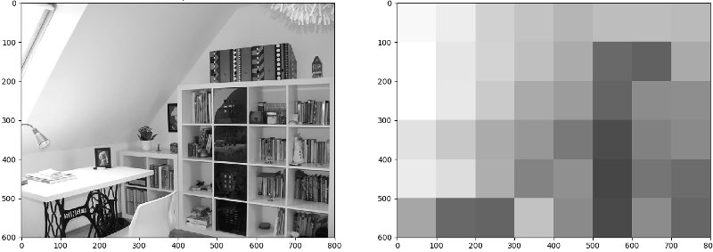

1. GridFix Introduction¶
GridFix is a Python toolbox to facilitate preprocessing of scene fixation data for region-based analysis using Generalized Linear Mixed Models (GLMM).
Our recently published manuscript [1] describes how this approach can be used to evaluate models of visual saliency above and beyond content-independent biases. Please also see [2] for a previous description of the approach and our ECVP 2016 poster for an overview about the structure and workflow of the GridFix toolbox.
Example data and Jupyter Notebooks for the “Tutorial” section are also available for download at https://github.com/ischtz/gridfix-tutorial/releases.
1.1. Features¶
- Define image parcellations (region masks) based on a regular grid (RegionSet), with other parcellation types planned for future versions
- Apply these parcellations to collections of images or saliency maps (ImageSet)
- Define features to assign a value to each region X image (e.g., mean saliency of each region)
- Explicitly model central viewer bias using different approaches (e.g. euclidean distance, Gaussian)
- Output the resulting feature vectors for GLMM-based analysis (see [1-2])
- Create R source code for subsequent GLMM analysis using lme4
1.2. Citing GridFix¶
If you use GridFix, please cite the following publication:
Nuthmann, A., Einhäuser, W., & Schütz, I. (2017). How well can saliency models predict fixation selection in scenes beyond central bias? A new approach to model evaluation using generalized linear mixed models. Frontiers in Human Neuroscience. http://doi.org/10.3389/fnhum.2017.00491
It is also possible to cite the software itself. In this case, please use the following Zenodo DOI:
1.3. References¶
[1] Nuthmann, A., Einhäuser, W., & Schütz, I. (2017). How well can saliency models predict fixation selection in scenes beyond central bias? A new approach to model evaluation using generalized linear mixed models. Frontiers in Human Neuroscience. http://doi.org/10.3389/fnhum.2017.00491
[2] Nuthmann, A., & Einhäuser, W. (2015). A new approach to modeling the influence of image features on fixation selection in scenes. Annals of the New York Academy of Sciences, 1339(1), 82-96. http://dx.doi.org/10.1111/nyas.12705